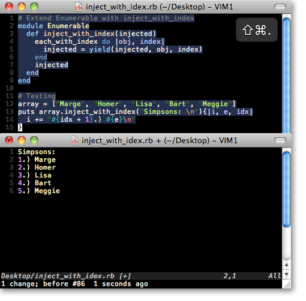
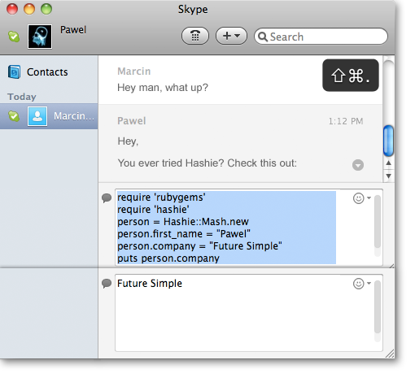
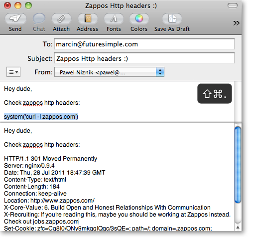

All content is copyright ©2009-2013 Base CRM Inc. All rights reserved. | Click here for Support. | Pawel Niznik | Sitemap
Yoke
Forget about OSX terminal. Forget irb. Use ruby everywhere. Meet Yoke.

In your favourite text editor
Imagine working on a ruby gem. Imagine not typing or copying / pasting the same code all over again to irb. Imagine totally ditching irb. Just write everything in a file and execute from the editor of your choice.

While discussing over skype
Imagine ruby brainstorming over skype. Just write your code and execute it in skype. No irb neccessary. Communication is so much faster this way.

While writing an email
Imagine writing an email to a dev friend about zappos.com's
http headers recruitment message. Why bother using terminal and copying / pasting?
Just use system('') call combined with curl and execute
it in email client.
Btw @zappos please use "server_tokens off;" in your nginx.conf to hide nginx version in http response headers.
How to use:

How to install:
$ git clone https://github.com/cziko/yoke.git
$ cd yoke && ./install.sh